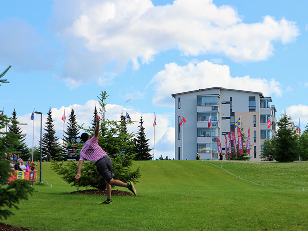
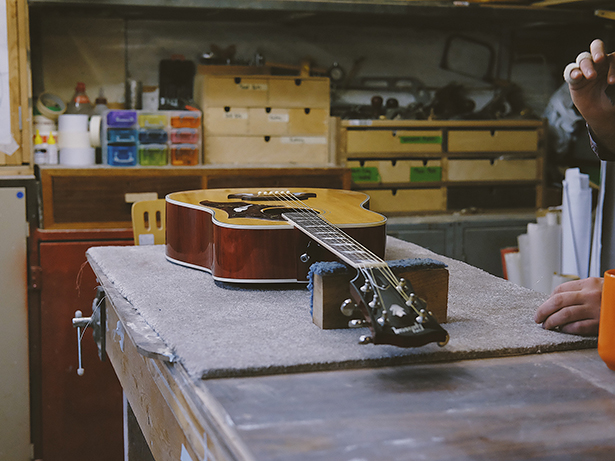

Schooling is tough but also fulfilling. If obtaining a dream was easy then it definitely wasn't earned. My life can be shaped but only with the correct tools. I must make the commitment to succeed and proceed with my goals and overcome any obstacles that I will be found in my path during my journey

An Office With A View
Every office should have a view. There is a time to work and a time to play. Your career will feel like an always round of playtime.

Crafting The Heart
Building something with your hands from a scrap piece of wood is exciting. Watching something come to life from another life is exhilarating.
Coding the Future
Late hours of creating the future from a canvas always take time. Falling into that zone is always around the corner. Shaping my students for their future and their family.